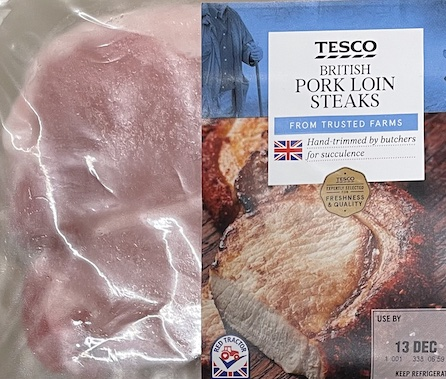
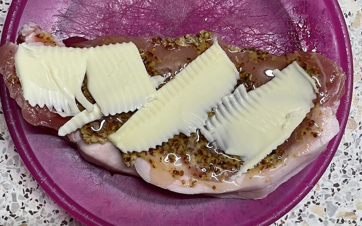

Pork loin steaks
Seared
- Pat dry
- Season well
- Cook on fat side to render a little
- Cook 5 mins each side
Air fry
- Pat dry
- Spread with butter, dijon mustard and honey
- Cook in air fryer at 180° for 9 mins
- Spread with whole grain mustard before serving
Photos
 Pork chops
- Trim skin and fry in pan with oil for 1 min each side
- Cook pan in oven at 180° for 15 mins
Serve with
- apple sauce